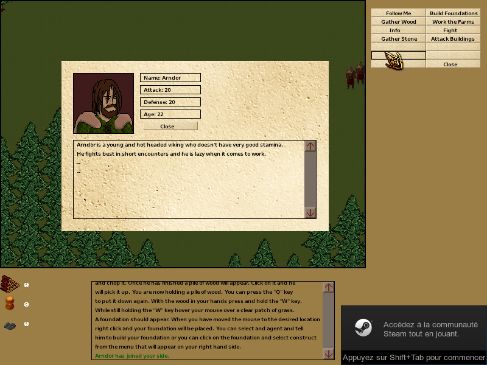
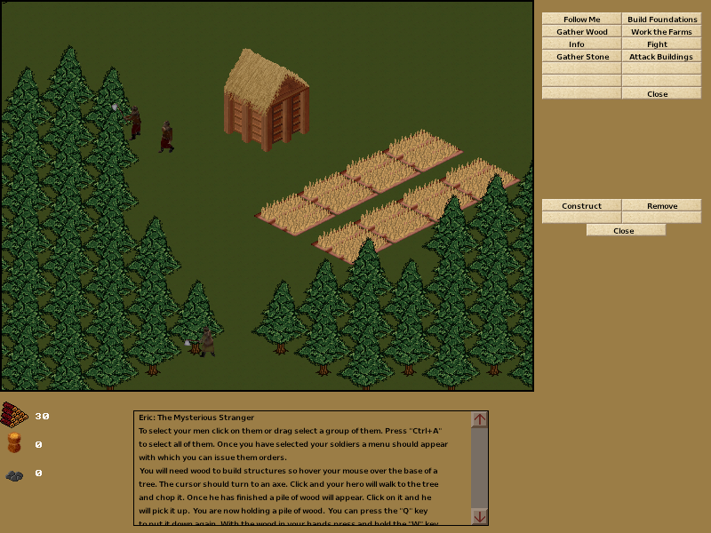
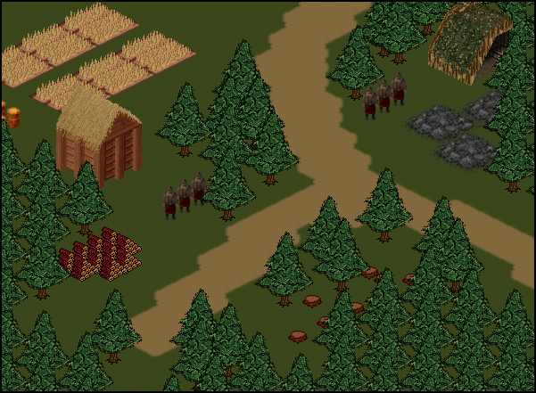
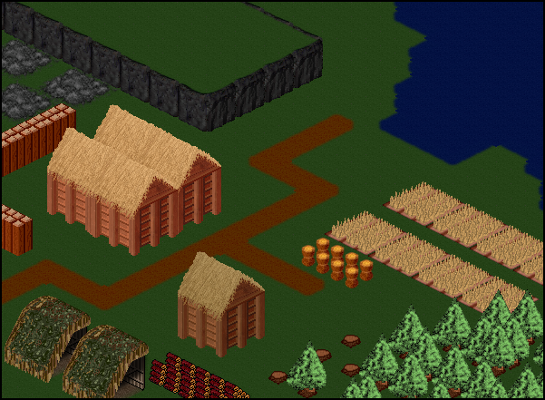
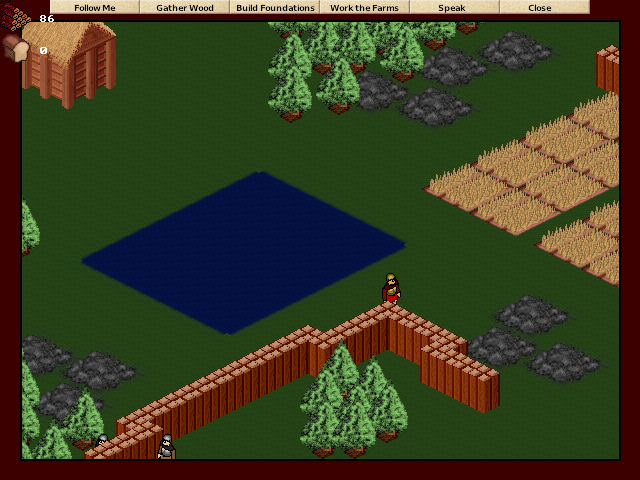
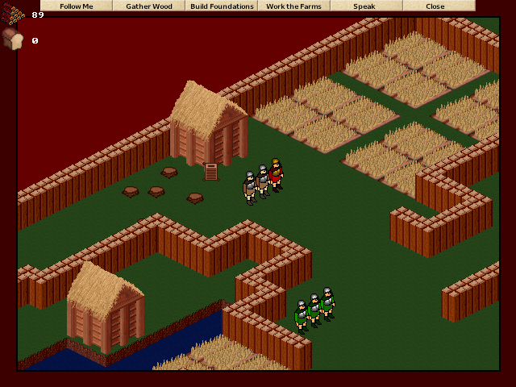

Eric: The Mysterious Stranger
The Mysterious Stranger is an open world game featuring real time strategy combat, city building, open world exploration, economical simulation and an intriguing story. Credits to D.J. Peters for his FBTrueType library. Uses SDL's mixer for audio playback. SteamAPI integration performed through a custom wrapper.
Gameplay Video

Screenshots
 
 
 